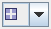
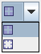

See also:
See also:
|  | You can change the style by selecting a listed image. The number of colored areas and their ordering changes. See what is currently supported. The following is just an example: |
|  |
Upper image changes the style to four colored areas ordered in a rectangle. Lower image changes the style to eight colored areas ordered in a rectangle.
See also: